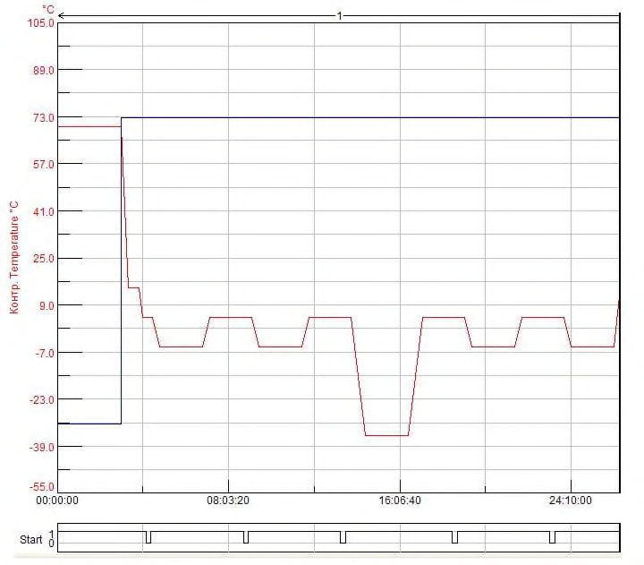

СП 71.13330.2017 «Изоляционные и отделочные покрытия»
О документе: разработчики, утверждение, регистрация, ключевые слова
СВОД ПРАВИЛ
СП 71.13330.2017
Издание официальное
Москва 2017
СП 71.13330.2017
1 ИСПОЛНИТЕЛЬ -Федеральное государственное бюджетное образовательное учреждение высшего образования «Национальный исследовательский Московский государственный строительный университет» (ФГБОУ ВО НИУ МГСУ)
2 ВНЕСЕН Техническим комитетом по стандартизации ТК 465 «Строительство»
3 ПОДГОТОВЛЕН к утверждению Департаментом градостроительной деятельности и архитектуры Министерства строительства и жилищнокоммунального хозяйства Российской Федерации (Минстрой России)
4 УТВЕРЖДЕН приказом Министерства строительства и жилищнокоммунального хозяйства Российской Федерации от 27 февраля 2017 г. № 128/пр и введен в действие с 28 августа 2017 г.
5 ЗАРЕГИСТРИРОВАН Федеральным агентством по техническому регулированию и метрологии (Росстандарт). Пересмотр СП 71.13330.2011 «СНиП 3.04.01-87 Изоляционные и отделочные покрытия»
В случае пересмотра (замены) или отмены настоящего свода правил соответствующее уведомление будет опубликовано в установленном порядке. Соответствующая информация, уведомление и тексты размещаются также в информационной системе общего пользования - на официальном сайте разработчика (Минстрой России) в сети Интернет
© Минстрой России, 2017
Настоящий свод правил на может быть полностью или частично воспроизведен, тиражирован и распространен в качестве официального издания на территории Российской Федерации без разрешения Минстроя России
Дата введения 2017-08-28
Введение
Настоящий свод правил разработан с учетом обязательных требований, установленных в федеральных законах от 27 декабря 2002 г. № 184-ФЗ «О техническом регулировании», от 30 декабря 2009 г. № 384-ФЗ «Технический регламент о безопасности зданий и сооружений».
Свод правил разработан авторским коллективом Федерального государственного бюджетного образовательного учреждения высшего образования «Национальный исследовательский Московский государственный строительный университет» (канд. техн. наук А.П. Пустовгар, канд. техн. наук С.А. Пашкевич, С.В. Нефедов, И.С. Иванова, Ф.А. Гребенщиков ) при участии НО «Национальный кровельный союз» (канд. техн. наук А.В. Воронин ), Ассоциации «РОСИЗОЛ» ( Е.Ю. Ивлиева, А.М. Деев ), НО Ассоциация «АНФАС» ( С.А. Голунов ), Ассоциации «Союз производителей сухих строительных смесей» ( Н.А. Глотова, А.В. Забелин, Б.Б. Второв ), ООО «ПСК Конкрит Инжиниринг» ( А.М. Горб) .
СП 71.13330.2017
| УДК (693.6 + 698 + 699.8) | ОКС 91.040 |
|---|---|
| 91.060 | |
| 91.120 | |
| 91.180 | |
| 91.200 |
1Область применения
Настоящий свод правил устанавливает правила производства и приемки изоляционных и отделочных работ при устройстве изоляционных слоев крыш, изоляционных покрытий оборудования и трубопроводов, внутренних помещений зданий и сооружений, в том числе защитных покрытий и покрытий полов.
2Нормативные ссылки
В настоящем своде правил приведены нормативные ссылки на следующие документы:
ГОСТ 9.104-79 Единая система защиты от коррозии и старения. Покрытия лакокрасочные. Группы условий эксплуатации
ГОСТ 166-89 (ИСО 3599-76) Штангенциркули. Технические условия
ГОСТ 427-75 Линейки измерительные металлические. Технические условия
ГОСТ 3826-82 Сетки проволочные тканые с квадратными ячейками. Технические условия
ГОСТ 4030-63 Гвозди кровельные. Конструкция и размеры
ГОСТ 5336-80 Сетки стальные плетеные одинарные. Технические условия
ГОСТ 7502-98 Рулетки измерительные металлические. Технические условия
ГОСТ 11473-75 Шурупы с шестигранной головкой. Конструкция и размеры
ГОСТ 21718-84 Материалы строительные. Диэлькометрический метод измерения влажности
\_\_\_\_\_\_\_\_\_\_\_\_\_\_\_\_\_\_\_\_\_\_\_\_\_\_\_\_\_\_\_\_\_\_\_\_\_\_\_\_\_\_\_\_\_\_\_\_\_\_\_\_\_\_\_\_\_\_\_\_\_\_\_\_\_\_
\_\_\_\_\_\_\_\_\_\_\_\_\_\_\_\_\_\_\_\_\_\_\_\_\_\_\_\_\_\_\_\_\_\_\_\_\_\_\_\_\_\_\_\_\_\_\_\_\_\_\_\_\_\_\_\_\_\_\_\_\_\_\_\_\_\_
ГОСТ 22690-2015 Бетоны. Определение прочности механическими методами неразрушающего контроля
ГОСТ 23279-2012 Сетки арматурные сварные для железобетонных конструкций и изделий. Общие технические условия
ГОСТ 28013-98 Растворы строительные. Общие технические условия
ГОСТ 30256-94 Материалы и изделия строительные. Метод определения теплопроводности цилиндрическим зондом
ГОСТ 31189-2015 Смеси сухие строительные. Классификация
ГОСТ 31357-2007 Cмеси сухие строительные на цементном вяжущем. Общие технические условия
ГОСТ 31377-2008 Смеси сухие строительные штукатурные на гипсовом вяжущем. Технические условия
ГОСТ 31387-2008 Смеси сухие строительные шпатлевочные на гипсовом вяжущем. Технические условия
ГОСТ 33083-2014 Смеси сухие строительные на цементном вяжущем для штукатурных работ. Технические условия
ГОСТ Р 51372-99 Методы ускоренных испытаний на долговечность и сохраняемость при воздействии агрессивных и других специальных сред для технических изделий, материалов и систем материалов. Общие положения
ГОСТ Р 54358-2011 Составы декоративные штукатурные на цементном вяжущем для фасадных теплоизоляционных композиционных систем с наружными штукатурными слоями. Технические условия
ГОСТ Р 55818-2013 Составы декоративные штукатурные на полимерной основе для фасадных теплоизоляционных композиционных систем с наружными штукатурными слоями. Технические условия
ГОСТ Р 56387-2015 Смеси сухие строительные клеевые на цементном вяжущем. Технические условия
СП 2.13130.2012 Системы противопожарной защиты. Обеспечение огнестойкости объектов защиты (с изменением № 1)
СП 17.13330.2017 «СНиП II-26-76 Кровли»
СП 20.13330.2016 «СНиП 2.01.07-85* Нагрузки и воздействия»
СП 28.13330.2012 «СНиП 2.03.11-85 Защита строительных конструкций от коррозии» (с изменениями № 1, № 2)
СП 29.13330.2011 «СНиП 2.03.13-88 Полы»
СП 45.13330.2017 «СНиП 3.02.01-87 Земляные сооружения, основания и фундаменты»
СП 48.13330.2011 «СНиП 12-01-2004 Организация строительства» (с изменением № 1)
СП 50.13330.2012 «СНиП 23-02-2003 Тепловая защита зданий»
СП 61.13330.2012 «СНиП 41-03-2003 Тепловая изоляция оборудования и трубопроводов» (с изменением № 1)
СП 70.13330.2012 «СНиП 3.03.01-87 Несущие и ограждающие конструкции» (с изменением № 1)
СП 72.13330.2016 «СНиП 3.04.03-85 Защита строительных конструкций и сооружений от коррозии»
СП 78.13330.2012 «СНиП 3.06.03-85 Автомобильные дороги» (с изменением № 1)
СП 131.13330.2012 «СНиП 23-01-99* Строительная климатология» (с изменением № 2)
СП 163.1325800.2014 Конструкции с применением гипсокартонных и гипсоволокнистых листов. Правила проектирования и монтажа
СанПиН 2.2.3.1384-03 Гигиенические требования к организации строительного производства и строительных работ
СП 2.2.2.1327-03 Гигиенические требования к организации технологических процессов, производственному оборудованию и рабочему инструменту
Примечание - При пользовании настоящим сводом правил целесообразно проверить действие ссылочных документов в информационной системе общего пользования -на официальном сайте федерального органа исполнительной власти в сфере стандартизации в сети Интернет или по ежегодному информационному указателю «Национальные стандарты», который опубликован по состоянию на 1 января текущего года, и по выпускам ежемесячного информационного указателя «Национальные стандарты» за текущий год. Если заменен ссылочный документ, на который дана недатированная ссылка, то рекомендуется использовать действующую версию этого документа с учетом всех внесенных в данную версию изменений. Если заменен ссылочный документ, на который дана датированная ссылка, то рекомендуется использовать версию этого документа с указанным выше годом утверждения (принятия). Если после утверждения настоящего свода правил в ссылочный документ, на который дана датированная ссылка, внесено изменение, затрагивающее положение, на которое дана ссылка, то это положение рекомендуется применять без учета данного изменения. Если ссылочный документ отменен без замены, то положение, в котором дана ссылка на него, рекомендуется применять в части, не затрагивающей эту ссылку. Сведения о действии сводов правил целесообразно проверить в Федеральном информационном фонде стандартов.
3Термины и определения
В настоящем своде правил применены термины по ГОСТ 31189, СП 17.13330, СП 29.13330, СП 61.13330, а также следующий термин с соответствующим определением:
- 3.1водоизоляционный слой
- Элемент крыши, предохраняющий здание или сооружение от атмосферных воздействий.
4Общие положения
Примечание - При устройстве многослойных покрытий акты освидетельствования скрытых работ должны быть оформлены по устройству каждого из нижних слоев (акт составляется на каждый̆ слой).
5Изоляционные слои крыш
5.1Общие положения
- установка и закрепление к железобетонным плитам компенсаторов деформационных швов, патрубков (или стаканов) для пропуска инженерного оборудования;
- оштукатуривание участков вертикальных поверхностей конструкций из штучных материалов (кирпича, бетонных блоков, пеноблоков и т. д.) на высоту наклеивания дополнительного водоизоляционного ковра в месте примыкания кровли и конструкции, но не менее 300 мм.
Примечание - При проведении изоляционных работ при температуре окружающего воздуха ниже 5 °С допускается обшивка участков вертикальных поверхностей конструкций фиброцементными плитами.
- соблюдение проектных уклонов;
- ровность основания;
- влажность основания (в случае укладки пароизоляционных материалов методом приклейки/наплавления);
Таблица 5.1 Требования к основанию под кровлю
| Требование | Допустимое значение | Метод контроля |
|---|---|---|
| 1 Уклон (для всех видов оснований) | Не более 0,2% | Измерительный с применением нивелира и рейки |
| 2 Ровность: - несущие железобетонные плиты - стяжка из цементно-песчаного раствора - стяжка из песчаного асфальтобетона - монолитный уклонообразующий слой - сборная стяжка - профилированный лист - деревянное основание | Отклонение поверхности основания вдоль уклона и на горизонтальной поверхности ±5 мм; поперек уклона и на вертикальной поверхности ±10 мм Перепады по высоте между смежными изделиями не более 5 | Измерительный с применением трехметровой рейки |
| 3 Влажность: - несущие железобетонные плиты - стяжка из цементно-песчаного раствора - стяжка из песчаного асфальтобетона - монолитный уклонообразующий слой - сборная стяжка - деревянное основание | Не более5% Не более5% Не более 2,5% Не более5% Не более 12% Не более 20% | Измерительный с применением электронного измерителя влажности для бетонов |
- правильность устройства деформационных швов в стяжках;
- усилие на вырыв крепежных элементов и его соответствие расчетному значению (для кровель с механическим креплением).
- соответствие марки профилированного настила требованиям проектной документации;
- правильность укладки профилированного настила (настил должен быть уложен широкой полкой вверх);
- соответствие количества и вида крепления профилированного настила требованиям проектной документации;
- наличие фасонных элементов в местах примыкания стальных профилированных настилов к парапетам и стенкам фонарей, а также в местах сквозных проходов через профилированный лист коммуникаций и водосточных воронок;
- отсутствие на поверхности и в гофрах профилированного листа строительного мусора, влаги, снега или льда;
- наличие заполнения пустот гофр профилированного настила согласно СП 17.13330, в местах прорезки отверстий в профилированном настиле, стыках листов профилированного настила в коньке и ендове, в местах его примыкания к другим строительным конструкциям крыши.
СП 71.13330.2017
- в случае стропильных конструкций - в виде сплошной или разреженной обрешетки (в зависимости от типа пароизоляционного материала и требований проектной документации);
- в случае монолитного железобетонного основания - в соответствии с 5.1.7.
5.2Устройство пароизоляционного слоя
- отсутствие порезов, отверстий и иных дефектов;
- герметичность соединения между собой полотнищ пароизоляционных материалов в местах нахлеста;
- плотное прилегание и закрепление (в соответствии с требованиями проектной документации) кромок пароизоляционного материала в местах примыканий к вертикальным поверхностям.
СП 71.13330.2017
5.3Устройство теплоизоляционного слоя
Примечание - При использовании в качестве материала теплоизоляционного слоя блоков или плит из пеностекла перед их укладкой нижнюю плоскость и две смежные грани следует обмазывать битумной мастикой. После укладки следует контролировать заполнение всех стыков плит (блоков) битумной мастикой.
Таблица 5.2 Требования к теплоизоляционному слою
| Требование | Допустимое значение | Метод контроля |
|---|---|---|
| 1 Отклонение плоскости теплоизоляционного слоя от заданного по проекту уклона (по всей площади) | Не более 0,2% | Измерительный, с применением аттестованного измерительного уклономера. Не менее пяти измерений на каждые 50-70 м² поверхности или на участке меньшей площади в местах, определяемых визуальным осмотром |
| 2 Отклонение плоскости теплоизоляционного слоя: - по горизонтали - по вертикали | ±5 мм ±10 мм | Измерительный, с применением деревянной или металлической (алюминиевой) рейки размерами не менее 2000×20×50 мм и металлической линейки по ГОСТ 427. Не менее пяти измерений на каждые 50-70 м² поверхности или на участке меньшей площади в местах, определяемых визуальным осмотром |
| 3 Влажность материала теплоизоляционного слоя | Не более5% | Измерительный, методом цилиндрического зонда по ГОСТ 30256. Не менее пяти измерений на каждые 50-70 м² поверхности или на участке меньшей площади в местах, определяемых визуальным осмотром |
| 4 Ширина швов между теплоизоляционными плитами из минеральной ваты | Не более 2 мм | Измерительный, с применением штангенциркуля по ГОСТ 166 и металлической линейки по ГОСТ 427. Не менее пяти измерений на каждые 50-70 м² поверхности или на участке меньшей площади в местах, определяемых визуальным осмотром |
5.4Устройство водоизоляционного слоя из рулонных материалов
Примечание - Не допускается попадание клея в область будущего сварного шва.
Таблица 5.3 Значение нахлеста рулонных полимерных материалов
| Метод укладки | Значение нахлеста для полимерных материалов на основе, мм, не менее | Значение нахлеста для полимерных материалов на основе, мм, не менее | Значение нахлеста для полимерных материалов на основе, мм, не менее |
|---|---|---|---|
| ПВХ и ТПО | ЭПДМ | ПИБ | |
| 1 Механическое крепление | 120 | 200 | 50 |
| 2 Балластный, клеевой | 80 | 100 | 50 |
и более допускается усиливать на ширину 150-250 мм с каждой стороны, а ендову - на ширину 500-750 мм (от линии перегиба) дополнительным слоем битумосодержащего рулонного материала.
5.5Устройство водоизоляционного слоя из мастичных материалов
5.6Устройство кровель из штучных материалов
5.7Устройство кровель из листовых материалов
- на 120-140 мм - при устройстве покрытий из хризотилцементных волнистых листов обыкновенного профиля и средневолнистых;
- на 200 мм - при устройстве покрытий из хризотилцементных листов унифицированного и усиленного профилей;
- на 75 мм - при устройстве покрытий из хризотилцементных плоских листов.
- отворот накрывающей кромки плотно заходит за неполную (или полную) верхнюю полку профиля на ее боковую накрываемую грань;
- нижний профиль с одной неполной боковой поверхностью плотно заходит под боковую поверхность профиля листа с коротким горизонтальным нижним отворотом;
- верхняя накрывающая кромка плотно (без зазоров между листами) заходит на выемку в верхней полке перекрываемого листа.
5.8Устройство кровель из металлических листов
5.9Требования к готовым покрытиям и приемка работ
- состояние покрытия на коньках, карнизах, ендовах и разжелобках, в местах установки опор радио- и телеантенн;
- состояние снегозадерживающих конструкций;
- целостность водосточных воронок и желобов.
- соответствие уклонов крыши проектным;
- соответствие размеров выполненных узлов требованиям проектной документации.
Таблица 5.4 Требования к готовым покрытиям кровель из рулонных и мастичных материалов
| Требование | Контролируемые показатели | Метод контроля |
|---|---|---|
| 1 Целостность покрытия | По всей поверхности, в том числе в местах примыканий, не допускается наличие вмятин, прогибов, вздутий, трещин, раковин, отслоений, локального изменения внешнего вида и прочих дефектов | Визуальный, по всей поверхности |
| 2 Прочность сцепления слоев | Прочность сцепления слоев с основанием и между по сплошной мастичной клеящей прослойке эмульсионных составов - не менее 0,1 МПа | Инструментальный контроль с использованием специализированного аттестованного оборудования (адгезиометра) |
| 3 Целостность соединения полотнищ рулонных материалов | Не допускаются расслоения в местах швов | Визуальный, выборочно, с применением шлицевой отвертки. Инструмент не должен проникать между полотнищами в местах швов |
СП 71.13330.2017
| 4 Примыкание к выступающим конструкциям | Примыкания должны соответствовать требованиям СП 17.13330. Углы конструкций примыканий | Визуальный, по всей поверхности |
Таблица 5.5 Требования к готовым покрытиям кровель из штучных материалов
| Требование | Контролируемые показатели | Метод контроля |
|---|---|---|
| 1 Целостность покрытия | Не допускается наличие трещин, короблений, сколов и прочих дефектов штучных материалов | Визуальный, по всей поверхности |
| 2 Нахлест черепицы | Соответствие требованиям СП 17.13330 | Инструментальный, с использованием линейки по ГОСТ 427 |
Таблица 5.6 Требования к готовым покрытиям кровель из листовых материалов и металлических листов
| Требование | Контролируемые показатели | Метод контроля |
|---|---|---|
| 1 Целостность покрытия из листовых материалов | Не допускаются серповидные зазоры, волны листов должны совпадать | Визуальный, по всей поверхности |
| 1 Целостность покрытия из листовых материалов | Уложенные листы не должны иметь трещин, наплывов, искажения профиля, сквозных отверстий [6]. Не допускаются просветы | Визуальный, со стороны чердачных помещений |
| 2 Целостность покрытия из металлических листов | Не допускаются вмятины, впадины и кривизна листов. Профили листов должны совпадать | Визуальный, по всей поверхности |
| 2 Целостность покрытия из металлических листов | Не допускаются просветы | Визуальный, со стороны чердачных помещений |
| 3 Соединения листовых материалов | Накрывающие кромки должны быть расположены сверху | Визуальный |
| 3 Соединения листовых материалов | Листы должны быть перекрыты с требуемым по проектной и рабочей документации нахлестом. Допустимое отклонение - не более 3 мм | Инструментальный, с использованием рулетки по ГОСТ 7502 или линейки по ГОСТ 427 |
| 4 Соединения металлических листов | Наличие уплотнительной ленты (герметика) в примыканиях и фальцах рядовой кровли (при уклоне менее 40 %). Соединения рядового покрытия не должны быть заметны с земли [6] | Визуальный |
6Изоляционные покрытия оборудования и трубопроводов
- в оборудование и трубопроводы в соответствии с проектом врезаны штуцеры и приборы, детали для крепления теплоизоляции установлены и надежно закреплены в проектном положении;
- поверхность изолируемых объектов очищена от грязи, ржавчины и пыли; на поверхность нанесено антикоррозионное покрытие;
- каналы систем теплоснабжения очищены от земли, мусора и снега; осуществлены мероприятия по укреплению грунта, исключающие возможность оползания его в траншеи.
- плотное прилегание изделий к изолируемой поверхности и между собой; при изоляции в несколько слоев - перекрытие продольных и поперечных швов;
- плотную спиральную укладку изоляции шнурами и жгутами с минимальным отклонением относительно плоскости, перпендикулярной оси трубопровода, и навивку в многослойных конструкциях каждого последующего слоя в направлении, обратном виткам предыдущего слоя;
- установку на горизонтальных трубопроводах и аппаратах креплений для предотвращения провисания теплоизоляции.
Примечание - При устройстве теплоизоляции в несколько слоев швы плит необходимо устраивать вразбежку.
7Отделочные работы
7.1Общие требования
- полностью завершены работы по монтажу строительных конструкций;
- смонтированы и опрессованы санитарно-технические коммуникации;
- смонтированы и опробованы скрытые электротехнические сети;
- устроены гидроизоляционные, теплоизоляционные слои, а также выполнены выравнивающие стяжки перекрытий;
- проведена заделка швов между блоками и панелями;
- заделаны и изолированы места сопряжений оконных, дверных и балконных блоков;
- остеклены световые проемы;
- смонтированы закладные изделия.
- устроена наружная гидроизоляция;
- выполнена кровля с деталями и примыканиями;
- устроены конструкции пола на балконах;
- установлены все крепежные элементы (для установки водосточных труб, декоративных элементов и т. д.) согласно проектной документации.
Таблица 7.1 Типы грунтовочных составов
| Тип грунтовочного состава | Назначение | Область применения |
|---|---|---|
| ГС 1 | Снижение впитывающий способности основания | Для обработки сильно впитывающих (гигроскопичных) оснований |
| ГС 2 | Выравнивание впитывающей способности основания | Для обработки оснований, выполненных из разнородных материалов |
| ГС 3 | Укрепление слабых оснований | Для обработки осыпающихся и мелящих оснований |
| ГС 4 | Подготовка гладких невпитывающих оснований | Для обработки оснований, выполненных из монолитного или сборного железобетона. Включают в свой состав минеральные наполнители для придания поверхности шероховатости |
| ГС 5 | Создание разделительного слоя между основанием и покрытием | Применяются для обработки оснований, имеющих низкую адгезию к материалу покрытия, или для создания защитного слоя между плохо совместимыми материалами |
| ГС 6 | Предотвращение коррозии | Применяются для обработки бетона и арматуры при производстве ремонтных работ, также подходят для обработки металлических элементов на фасадах зданий, в том числе закладных деталей |
СП 71.13330.2017
| ГС 7 | Подготовка поверхности под окраску или декоративную отделку | Применяются для обработки оснований перед окраской или декоративной отделкой, могут изготовляться из материала покрытия путем его разведения |
|---|---|---|
| ГС 8 | Грунтовочные составы специального назначения | Входят в состав системы отделочных или изоляционных покрытий, применяются согласно инструкции производителя |
7.2Производство штукатурных работ
Таблица 8 Требования к проверке и подготовке основания перед началом производства штукатурных работ
| Контролируемый параметр | Описание | Контроль (метод, объем, допустимое отклонение) | Меры по устранению дефектов |
|---|---|---|---|
| Наличие инородных веществ и включений на поверхности | Проверяют на наличие: - инородных веществ на поверхности основания (грязь, брызги раствора, остатки древесины от опалубки, сажа и др.); - известковые высолы на поверхности | Сплошной визуальный осмотр, наличие инородных веществ и включений не допускается | Удалить механическим способом или придать шероховатость (металлической щеткой, скребком или пескоструйным оборудованием и др.) |
| Запыленность основания | Проводят по поверхности рукой и устанавливают наличие пыли и грязи | Сплошной визуальный осмотр, наличие пыли и грязи не допускается | Удаляют пыль и грязь |
|---|---|---|---|
| Поверхностная прочность основания | Проводят по основанию острым краем металлического инструмента (шпатель, кельма и т. д.), при этом отмечают откалывание, осыпание. Отслаивание определяют методом простукивания | Инструментальный, не менее пяти измерений на каждые 100 м² поверхности, осыпание не допускается | Отслаивающиеся участки необходимо удалить. Слабые основания очищают до прочного слоя и (или) наносят грунтовочный состав ГС 3 по таблице 7.1 |
| Впитывающая способность основания | Наносят чистую воду хорошо смоченной щеткой или валиком, если через 2 мин по стене еще скатывается вода или цвет основания не меняется, причинами чего могут быть: - присутствие на основании остатков опалубочной смазки; - превышение допустимых значений влажности основания; - присутствие веществ, повышающих гидрофобность поверхности; - присутствие мягких и отслаивающих частей основания | Визуальный, не менее трех измерений на каждые 100 м² поверхности, неоднородность не допускается | Загрязненную смазкой поверхность очищают водой и щеткой с добавлением чистящих средств, после чего промывают чистой водой. Возможна также механическая чистка |
| Влажность основания | Остаточную влажность верхнего слоя (20-30 мм) основания измеряют аттестованным влагомером | Инструментальный, не менее трех измерений на каждые 100 м² поверхности, влажность основания - не более 5 %по массе | Выдержать технологическую паузу в летний период не менее четырех недель, в зимний период - не менее 60 дней при температуре от 0 ºС до 5 ºС после отделения опалубки |
| Температура основания | Измерения проводят контактным термометром | Инструментальный, не менее трех измерений на каждые 100 м² поверхности, | Организуют обогрев или защиту от прямых солнечных лучей |
| температура основания - от 5 ºС до 30 ºС |
Таблица 7.3 Типы штукатурных сеток
| Тип штукатурной сетки | Область применения | Порядок монтажа |
|---|---|---|
| Тканая металлическая сетка по ГОСТ 3826 | Тонкослойные штукатурки до 30 мм при выполнении фасадных отделочных работ | Перед креплением сетки к стене ее необходимо обезжирить. Начинают монтаж металлической сетки от потолка, закрепляя верхний край полотнища по всей длине с помощью крепежных элементов, далее устанавливают крепление в шахматном порядке по всей поверхности стены. На стыках полотнища должны находить друг на друга с перехлестом 80-100 мм. Между сеткой и стеной необходимо обеспечить зазор 5-10 мм в зависимости от толщины слоя штукатурного раствора |
| Стальная плетеная сетка (рабица) по ГОСТ 5336 | Для выполнения фасадных штукатурных работ на стенах площадью более 100 м² при толщине слоя не более 50 мм | Перед креплением сетки к стене ее необходимо обезжирить. Начинают монтаж металлической сетки от потолка, закрепляя верхний край полотнища по всей длине с помощью крепежных элементов, далее устанавливают крепление в шахматном порядке по всей поверхности стены. На стыках полотнища должны находить друг на друга с перехлестом 80-100 мм. Между сеткой и стеной необходимо обеспечить зазор 5-10 мм в зависимости от толщины слоя штукатурного раствора |
| Арматурная сварная сетка по ГОСТ 23279 | При штукатурных фасадных работах на поверхностях, подверженных усадке (новостройки, здания, стоящие на подвижных грунтах), при толщине слоя не более 50 мм | Перед креплением сетки к стене ее необходимо обезжирить. Начинают монтаж металлической сетки от потолка, закрепляя верхний край полотнища по всей длине с помощью крепежных элементов, далее устанавливают крепление в шахматном порядке по всей поверхности стены. На стыках полотнища должны находить друг на друга с перехлестом 80-100 мм. Между сеткой и стеной необходимо обеспечить зазор 5-10 мм в зависимости от толщины слоя штукатурного раствора |
| Просечно-вытяжная сетка согласно нормативным документам, технической документации или техническим условиям производителя | Тонкослойные штукатурки; при выполнении фасадных штукатурных работ на стенах любой площадью при толщине слоя не более 50 мм | Перед креплением сетки к стене ее необходимо обезжирить. Начинают монтаж металлической сетки от потолка, закрепляя верхний край полотнища по всей длине с помощью крепежных элементов, далее устанавливают крепление в шахматном порядке по всей поверхности стены. На стыках полотнища должны находить друг на друга с перехлестом 80-100 мм. Между сеткой и стеной необходимо обеспечить зазор 5-10 мм в зависимости от толщины слоя штукатурного раствора |
- выставляют вертикальное положение крайнего маяка (контроль положения профиля осуществляется с помощью строительного уровня);
- после выставления уровня фиксируют профиль;
- устанавливают крайний маяк с противоположной стороны тем же способом;
- остальные направляющие устанавливают в плоскости, образованной двумя крайними маяками с шагом не менее чем на 10 см меньше длины используемого правила.
При выполнении работ штукатурными растворами на цементном или известково-цементном вяжущем не допускается фиксация маяков гипсовыми материалами.
СП 71.13330.2017
Таблица 7.4 Требования к оштукатуренным основаниям
| Контролируемый параметр | Предельное отклонение | Контроль (метод, объем, вид регистрации) |
|---|---|---|
| Простая штукатурка | Простая штукатурка | Простая штукатурка |
| Отклонение от вертикали | Не более 3 мм на 1 м, но не более 10 мм на всю высоту помещения | Измерительный, контроль двухметровой рейкой или правилом, не менее пяти |
| Отклонение по горизонтали | Не более 3 мм на 1 м | измерений на каждые 70 2 |
| Неровности поверхности плавного очертания | На площади 4 м² не более 4 мм на 1 м, но не более 10 мм на весь элемент | м , журнал работ Измерительный, лекалом, не менее трех измерений на элемент, журнал работ |
| Отклонение оконных и дверных откосов, пилястр, столбов и т. п. от вертикали и горизонтали | Не более 4 мм на 1 м, но не более 10 мм на весь элемент | Измерительный, контроль двухметровой рейкой или правилом, не менее пяти измерений на каждые 70 м² , журнал работ |
| Отклонение радиуса криволинейных поверхностей от проектного значения | Не более 10 мм на весь элемент | Измерительный, контроль двухметровой рейкой или правилом, не менее пяти измерений на каждые 70 м² , журнал работ |
| Отклонение ширины откоса от проектной | Не более 5 мм | Измерительный, контроль двухметровой рейкой или правилом, не менее пяти измерений на каждые 70 м² , журнал работ |
| Улучшенная штукатурка | Улучшенная штукатурка | Улучшенная штукатурка |
| Отклонение от вертикали | Не более 2 мм на 1 м, но не более 10 мм на всю высоту помещения | Измерительный, контроль двухметровой рейкой или правилом, не менее пяти измерений на каждые 50 м² , журнал работ |
| Отклонение по горизонтали | Не более 3 мм на 1 м | Измерительный, контроль двухметровой рейкой или правилом, не менее пяти измерений на каждые 50 м² , журнал работ |
| Неровности поверхности плавного очертания | Не более 2 шт., глубиной (высотой) до 3 мм | Измерительный, лекалом, не менее трех измерений на элемент, журнал работ |
| Отклонение оконных и дверных откосов, пилястр, столбов и т. п. от вертикали и горизонтали | На площади 4 м² не более 4 мм на 1 м, но не более 10 мм на весь элемент | Измерительный, контроль двухметровой рейкой или правилом, не менее пяти измерений на каждые 50 м² , журнал работ |
| Отклонение радиуса криволинейных поверхностей от проектного значения | Не более 7 мм на весь элемент | Измерительный, контроль двухметровой рейкой или правилом, не менее пяти измерений на каждые 50 м² , журнал работ |
СП 71.13330.2017
| Отклонение ширины откоса от проектной | Не более 3 мм | |
|---|---|---|
| Высококачественная штукатурка | Высококачественная штукатурка | Высококачественная штукатурка |
| Отклонение от вертикали | Не более 0,5 мм на 1 м, но не более 5 мм на всю высоту помещения | Измерительный, контроль двухметровой рейкой или правилом, не менее пяти измерений на каждые 50 м² , журнал работ |
| Отклонение по горизонтали | Не более 1 мм на 1 м | Измерительный, контроль двухметровой рейкой или правилом, не менее пяти измерений на каждые 50 м² , журнал работ |
| Неровности поверхности плавного очертания | Не более 2 шт., глубиной (высотой) до 1 мм | Измерительный, лекалом, не менее трех измерений на элемент, журнал работ |
| Отклонение оконных и дверных откосов, пилястр, столбов и т. п. от вертикали и горизонтали | На площади 4 м² не более 2 мм на 1 м, но не более 5 мм на весь элемент | Измерительный, контроль двухметровой рейкой или правилом, не менее пяти измерений на каждые 50 м² , журнал работ |
| Отклонение радиуса криволинейных поверхностей от проектной величины | Не более 4 мм на весь элемент | Измерительный, контроль двухметровой рейкой или правилом, не менее пяти измерений на каждые 50 м² , журнал работ |
| Отклонение ширины откоса от проектной | Не более 2 мм | Измерительный, контроль двухметровой рейкой или правилом, не менее пяти измерений на каждые 50 м² , журнал работ |
7.3Производство шпатлевочных работ
Таблица 7.5 Требования к качеству поверхности в зависимости от типа финишного покрытия
| Категория качества поверхности | Назначение | Требования (методы контроля) |
|---|---|---|
| К1 | Поверхности, к декоративным свойствам которых требования не предъявляются (поверхности предназначены под выполнение облицовочных работ различными типами плиток и листовых материалов) | Допускается наличие царапин, раковин, задиров, следов от инструмента глубиной не более 3 мм (сплошной визуальный осмотр). Тени от бокового света допускаются (контроль не проводится) |
| К2 | Поверхности, к декоративным свойствам которых предъявляются обычные требования (поверхности предназначены под выполнение облицовочных работ элементами площадью не менее 900 см² , нанесение декоративных штукатурок с размером зерна более 1 мм, для нанесения структурных красок и покрытий, для приклейки тяжелых обоев | Допускается наличие царапин, раковин, задиров глубиной не более 1 мм (сплошной визуальный осмотр). Тени от бокового света допускаются (контроль проводят при необходимости доведения качества поверхности до категории К3) |
СП 71.13330.2017
| К3 | Поверхности, к декоративным свойствам которых предъявляются повышенные требования (поверхности предназначены под выполнение облицовочных работ мелкоштучными и прозрачными элементами, нанесение декоративных штукатурок с размером зерна менее 1 мм, для нанесения неструктурных матовых красок и покрытий, приклейки обоев на бумажной и флизелиновой основе) | Допускается наличие следов от абразива, применяемого при шлифовке поверхности, но не глубже 0,3 мм (сплошной визуальный осмотр). Тени от бокового света допускаются, но они должны быть значительно меньше, чем при качестве поверхности категории К2 (контроль проводят при необходимости) |
|---|---|---|
| К4 | Поверхности, к декоративным свойствам которых предъявляются максимальные требования (поверхности предназначены под выполнение глянцевых облицовок, например под металлические или виниловые обои, нанесение глянцевых красок, глазури или покрытий, нанесение полимерной, тонкослойной, венецианской штукатурки или для иных видов высококачественного глянца, для окраски поверхности тонкослойными полуматовыми или глянцевыми покрытиями с применением аппаратов безвоздушного распыления, для приклейки тончайших металлизированных обоев и глянцевых фотообоев). Рекомендуется при установке бокового освещения | Не допускается наличие царапин, раковин, задиров, следов от инструмента (сплошной визуальный осмотр). Тени от бокового света не допускаются (сплошная визуальная оценка с помощью ручного бокового светильника) |
7.4Производство облицовочных работ
ГОСТ Р 56387 - для плиточных клеев на цементном вяжущем;
- техническим условиям производителя - для мастик и дисперсных клеев.
При применении растворов на цементной основе для облицовки фасадов не допускается использование плиточных клеевых смесей ниже класса С1 по ГОСТ Р 56387, а при устройстве облицовки по клеевой прослойке выше первого этажа не допускается использование плиточных клеевых смесей ниже класса С2 по ГОСТ Р 56387. При устройстве облицовок по клеевой прослойке допускается использование цементных растворов с добавлением дисперсий водорастворимых полимеров, с обязательным подтверждением соответствия качества получаемого раствора требованиям ГОСТ Р 56387.
Таблица 7.6 Требования к облицовочным покрытиям
| Параметры и требуемые значения | Параметры и требуемые значения | Параметры и требуемые значения | Параметры и требуемые значения | Параметры и требуемые значения | |
|---|---|---|---|---|---|
| Облицованная поверхность | Отклонения от вертикали, мм на 1 м длины, не менее | Отклонения расположе- ния швов от вертикали и горизонтали, мм на 1 м длины, не менее | Несовпадения профиля на стыках архитектур- ных деталей и швов, мм на 1 м, не менее | Неровности плоскости облицовки (при контроле двухметровой рейкой), мм, не менее | Отклонения ширины шва, мм, не менее |
| Зеркальная, лощеная | 2 (4 на этаж) | 1,5 | 0,5 | 2 | ±0,5 |
| Шлифованная, точечная, бугристая, бороздчатая | 3 (8 на этаж) | 3 | 1 | 4 | - |
| Фактура типа «скала» | - | 3 | 2 | - | ±2 |
| Из гранита и искусственного камня | - | - | - | - | ±0,5 |
| Из мрамора | - | - | - | - | ±0,5 |
| Из керамических, стеклокерами- ческих и других изделий: - наружная облицовка - внутренняя облицовка | 2 (5 на этаж) 1,5 (4 на этаж) | 2 1,5 | 4 3 | 3 2 | ±0,5 ±0,5 |
| Контроль (метод, объем, вид регистрации) | Измерительный, не менее пяти измерений на 50-70 м² поверхности или на отдельном участке меньшей площади в местах, выявленных сплошным визуальным осмотром, | Измерительный, не менее пяти измерений на 50-70 м² поверхности или на отдельном участке меньшей площади в местах, выявленных сплошным визуальным осмотром, | Измерительный, не менее пяти измерений на 70-100 м² поверхности или на отдельном участке меньшей площади в местах, выявленных сплошным визуальным осмотром, журнал работ | Измерительный, не менее пяти измерений на 70-100 м² поверхности или на отдельном участке меньшей площади в местах, выявленных сплошным визуальным осмотром, журнал работ | Измерительный, не менее пяти измерений на 70-100 м² поверхности или на отдельном участке меньшей площади в местах, выявленных сплошным визуальным осмотром, журнал работ |
7.5Производство малярных работ
Таблица 7.7 Требования к качеству выполненных малярных работ
| Технические требования | Допустимые отклонения |
|---|---|
| Поверхности, окрашенные водоэмульсионными красками | Поверхности, окрашенные водоэмульсионными красками |
| Отличия по цвету | В пределах одного тона по каталогу (палитре) производителя |
| Полосы, пятна, подтеки, брызги | Не допускаются для жилых и общественных помещений. Должны быть незаметны при сплошном визуальном осмотре с расстояния 2 м от поверхности для подсобных и технических помещений |
| Меление поверхности | Не допускается |
| Исправления, выделяющиеся на общем фоне | Не допускаются для жилых и общественных помещений. Должны быть незаметны при сплошном визуальном осмотре с расстояния 2 м от поверхности для подсобных и технических помещений |
| Поверхности, окрашенные безводными составами | Поверхности, окрашенные безводными составами |
| Полосы, пятна, подтеки, брызги, следы от кисти или валика, неровности | Не допускаются |
| Отличия по цвету | В пределах одного тона по каталогу (палитре) производителя |
СП 71.13330.2017
| Поверхности, окрашенные лаками | Поверхности, окрашенные лаками |
|---|---|
| Трещины | Не допускаются |
| Видимые утолщения | Не допускаются |
| Следы лака на тампоне (после высыхания) | Не допускаются |
7.6Производство обойных работ
- 1) клей наносится на стену;
- 2) клей наносится на обои.
7.7Устройство подвесных потолков, панелей и плит с лицевой отделкой в интерьерах зданий
Таблица 7.8 Требования к устройству подвесных потолков, панелей и плит с лицевой отделкой в интерьерах зданий
| Технические требования | Предельные отклонения, мм, не более | Контроль (метод, объем, вид регистрации) |
|---|---|---|
| Максимальные значения уступов готовой облицовки между плитами и панелями, а также рейками (подвесных потолков) | 2 | Измерительный, не менее пяти измерений на 50-70 м² поверхности или отдельных участков меньшей площади, выявленных сплошным визуальным осмотром, журнал работ |
| Отклонение плоскости всего поля отделки по диагонали, вертикали и горизонтали (от проектной) на 1 м длины | 1,5 (7 - на всю поверхность) | Измерительный, не менее пяти измерений на 50-70 м² поверхности или отдельных участков меньшей площади, выявленных сплошным визуальным осмотром, журнал работ |
| Отклонение направления стыка элементов облицовки стен от вертикали на 1 м длины | 1 | Измерительный, не менее пяти измерений на 50-70 м² поверхности или отдельных участков меньшей площади, выявленных сплошным визуальным осмотром, журнал работ |
8Устройство полов
8.1Общие требования
10 -при устройстве покрытий из полимерных материалов; эту температуру следует поддерживать в течение не менее суток после окончания работ;
10 - при устройстве элементов пола из ксилолита и смесей, в состав которых входит жидкое стекло; эту температуру следует поддерживать до приобретения уложенным материалом прочности не менее 70 % проектной;
5 - при устройстве элементов пола с применением битумных мастик и их смесей, в состав которых входит цемент; эту температуру следует поддерживать до приобретения материалом прочности не менее 50 % проектной; при устройстве покрытий полов с упрочненным верхним слоем температура должна быть на 5 °С выше указанной минимальной;
5 - при устройстве элементов пола с применением сухих смесей на основе гипсового, цементного, смешанного вяжущего; эту температуру следует поддерживать до высыхания слоя (влажность затвердевшего слоя не более 6 %);
0 - при устройстве элементов пола из грунта, гравия, шлаков, щебня и штучных материалов без приклейки к нижележащему слою или по песку.
Примечание - Требования к температуре воздуха и основания могут быть скорректированы согласно рекомендациям производителя материала.
Устройство полов на мерзлых грунтах не допускается.
При устройстве полов на неутепленных перекрытиях температура воздуха в нижерасположенном помещении должна быть не ниже указанной.
Для ускоренного твердения смесей с применением цемента и других материалов, приобретающих прочность после укладки пола, конструкции пола необходимо выполнять и выдерживать до набора проектной прочности при температурах на 5 °С - 10 °С выше указанных минимальных.
8.2Подготовка нижележащих элементов пола
8.3Устройство бетонных подстилающих слоев
Таблица 8.1 Требования к устройству бетонных подстилающих слоев
| Технические требования | Контроль (метод, объем, вид регистрации) |
|---|---|
| Максимальная крупность щебня не должна превышать 40 мм и 0,25 толщины подстилающего слоя | Измерительный, в процессе приготовления смесей не менее трех измерений на одну партию заполнителя, журнал работ |
| Максимальная крупность щебня для сталефибробетонных подстилающих слоев не должна превышать 20 мм | Измерительный, в процессе приготовления смесей не менее трех измерений на одну партию заполнителя, журнал работ |
| Нарезку пазов температурно-усадочных швов следует проводить при достижении прочности покрытия на сжатие 8-10 МПа, не позднее 2 сут после укладки смеси | Измерительный, всей поверхности подстилающего слоя, журнал работ |
| При применении метода вакуумирования: - подвижность бетонной смеси - не менее П3; - разрежение в вакуум-насосе - 0,07-0,08 МПа; - продолжительность вакуумирования - 1-1,5 мин на 10 мм толщины подстилающего слоя | Измерительный, на каждом участке вакуумирования, журнал работ |
8.4Устройство стяжек
Таблица 8.2 Требования к устройству стяжек
| Технические требования | Контроль (метод, объем, вид регистрации) |
|---|---|
| Стяжки, укладываемые по звукоизоляционным прокладкам или засыпкам, в местах примыкания к стенам, перегородкам и другим конструкциям, необходимо уложить с зазором шириной не менее 10 мм на всю толщину стяжки и заполнить аналогичным звукоизоляционным материалом. Монолитные стяжки должны быть изолированы от стен и пе- регородок полосами из гидроизоляционных материалов и демпферными лентами | Визуальный и измерительный, всех мест примыканий, журнал работ |
| Торцевые поверхности уложенного участка монолитных стяжек после снятия маячных или ограничительных реек перед укладкой смеси в смежный участок стяжки должны быть огрунтованы (см. 8.2.2) или увлажнены (см. 8.2.3), а рабочий шов заглажен так, чтобы он был незаметен | Визуальный, не реже четырех раз в смену, журнал работ |
| Заглаживание поверхности монолитных стяжек следует выполнять до схватывания смесей | Визуальный, всей поверхности стяжек, не реже четырех раз в смену, журнал работ |
| Заклеивание стыков сборной стяжки должно быть выполнено по всей длине стыков согласно проектному решению | Визуальный, всех стыков, журнал работ |
| Укладку доборных элементов между сборными стяжками на цементных и гипсовых вяжущих следует проводить с зазором шириной 10-15 мм, заполняемым смесью, аналогичной материалу стяжки. При ширине зазоров между плитами сборной стяжки и стенами или перегородками менее 0,4 м смесь должна быть уложена по сплошному звукоизоляционному слою | Визуальный и измерительный, всех зазоров, журнал работ |
8.5Устройство звукоизоляции
Таблица 8.3 Требования к устройству звукоизоляции
| Технические требования | Предельные отклонения | Контроль (метод, объем, вид регистрации) |
|---|---|---|
| Крупность сыпучего звукоизоляционного материала | От 0,15 до 20 мм | Измерительный, не менее трех измерений на каждые 50-70 м² засыпки, журнал работ |
| Влажность сыпучего материала засыпки между лагами | Не более 10% | Измерительный, не менее трех измерений на каждые 50-70 м² засыпки, журнал работ |
| Ширина звукоизоляционных прокладок | Согласно проекту | Измерительный, не менее трех измерений на каждые 50-70 м² поверхности пола, журнал работ |
| Расстояние между осями полос звукоизоляционных прокладок внутри периметра сборных стяжек | Согласно проекту | То же, не менее трех измерений на каждой плите сборной стяжки, журнал работ |
8.6Устройство гидроизоляции
Оклеечную гидроизоляцию из бутилкаучука и полиизобутилена следует наклеивать на холодную синтетическую мастику.
Битумные рулонные материалы следует наклеивать на битумную мастику.
Рулонные материалы с заводским мастичным слоем следует наклеивать путем расплавления мастичного слоя одновременно с раскаткой рулона.
Гидроизоляцию из битумной и битумно-полимерной эмульсии следует наносить тремя-четырьмя слоями, толщиной по 1-1,5 мм каждый с расходом 2 л на 1 м² по основанию, грунтованному двумя слоями битумной эмульсии.
При устройстве гидроизоляции из полимерных рулонных материалов с приклейкой полотнищ их необходимо приклеивать к грунтованной поверхности битумными, битумно-полиизобутиленовыми мастиками, полимерным или резиновым клеем.
Гидроизоляцию из пленочных рулонных материалов следует устраивать следующими способами: склеиванием кромок или нахлестов, приклеиванием рулонов полимерными клеями к грунтованному основанию или приклеиванием рулонов с полимерным клеевым слоем к грунтованному основанию за счет пластификации этого слоя.
Гидроизоляцию из растворов на основе цемента следует армировать металлической сеткой размерами ячеек от 10×10 до 20×20 мм или сетками из полимерных материалов.
Гидроизоляцию из полиуретановых и других маслостойких составов следует армировать стеклосеткой путем втапливания в нанесенный состав с последующим покрытием слоем соответствующего полимерного материала.
Требования к устройству гидроизоляции
СП 71.13330.2017 Таблица 8.4 -
| Технические требования | Предельные отклонения | Контроль (метод, объем, вид регистрации) |
|---|---|---|
| Температура битумной мастики при нанесении 160 °C | + 20 °С | Измерительный, каждой партии, приготовленной для нанесения мастики, журнал работ |
| Температура песка 50 °С | + 10 °С | Измерительный, каждой порции песка перед его нанесением, журнал работ |
| Толщина слоя битумной мастики 1,0 мм | + 0,5 мм | Измерительный, не менее трех измерений на каждые 50-70 м² поверхности гидроизоляции, акт освидетельствования скрытых работ |
8.7Требования к промежуточным элементам пола
Прочность материалов, твердеющих после укладки, должна быть не менее проектной. Допустимые отклонения при устройстве промежуточных элементов пола приведены в таблице 8.5.
Таблица 8.5 Требования к промежуточным элементам пола
| Технические требования | Предельные отклонения | Контроль (метод, объем, вид регистрации) |
|---|---|---|
| Просветы между контрольной двухметровой рейкой и проверяемой поверхностью элемента пола: - для грунтовых оснований - нежестких подстилающих слоев - бетонных подстилающих и выравнивающих слоев под устройство гидроизоляционного слоя - бетонных подстилающих и выравнивающих слоев под покрытия других типов - стяжек и выравнивающих слоев под покрытия из полимерных материалов, защитного полимерного покрытия пола, покрытия из штучных элементов на основе древесины - бетонных подстилающих слоев и стяжек под покрытия из линолеума, рулонных на основе синтетических волокон, поливинилхлоридных плиток, паркетных покрытий, ламината и мастичных полимерных материалов - стяжек и выравнивающих слоев под покрытия других типов - стяжек и выравнивающих слоев под облицовку крупноформатной плиткой (более 1 м² ) | Не более 20 мм Не более 15 мм Не более 5 мм Не более 10 мм Не более 2 мм Не более 2 мм Не более 4 мм Не более 2 мм | Измерительный, не менее пяти измерений на каждые 50-70 м² поверхности пола или в одном помещении меньшей площади в местах, выявленных визуальным контролем, журнал работ |
СП 71.13330.2017
| Отклонения плоскости элемента от горизонтали или заданного уклона | 0,2% соответствующего размера помещения, но не более 50 мм для грунтовых оснований и нежестких подстилающих слоев и не более 20 мм для элементов других типов | Измерительный, не менее пяти измерений равномерно на каждые 50-70 м² поверхности пола или в одном помещении меньшей площади, журнал работ |
|---|---|---|
| Отклонения по толщине подстилающих и выравнивающих слоев | Не более 10% проектной | Измерительный, не менее одного измерения на каждые 100 м² площади элемента пола или в одном помещении меньшей площади, журнал работ |
8.8Устройство монолитных покрытий
Таблица 8.6 Требования к монолитным покрытиям пола
| Технические требования | Контроль (метод, объем, вид регистрации) |
|---|---|
| Максимальная крупность щебня для бетонных покрытий не должна превышать 20 мм и 0,25 толщины покрытий | Измерительный - в процессе приготовления смесей, не менее трех измерений на одну партию заполнителя, журнал работ |
| Максимальная крупность щебня для сталефибробетонных покрытий не должна превышать 20 мм | Измерительный - в процессе приготовления смесей, не менее трех измерений на одну партию заполнителя, журнал работ |
| Максимальная крупность заполнителя для мозаичных, поливинилацетатно-цементно-бетонных, латексно- цементно-бетонных покрытий не должна превышать 15 мм и 0,6 толщины покрытий | Измерительный - в процессе приготовления смесей, не менее трех измерений на одну партию заполнителя, журнал работ |
| Мраморная крошка для мозаичных покрытий должна иметь прочность на сжатие не менее 60 МПа; для поливинилацетатно-цементно-бетонных, латексно- цементно-бетонных покрытий - не менее 80 МПа | Измерительный, не менее трех измерений на одну партию заполнителя, журнал работ |
| Шлифование покрытий следует проводить по достижении прочности покрытия, при котором исключается выкрашивание заполнителя. Толщина снимаемого слоя должна обеспечивать полное вскрытие фактуры декоративного заполнителя. При шлифовании обрабатываемая поверхность должна быть покрыта тонким слоем воды или водного раствора поверхностно-активных веществ | Измерительный, не менее девяти измерений равномерно на каждые 50-70 м² поверхности покрытия, журнал работ |
| Расход упрочняющей смеси - не менее 3 кг/м² для неокрашенных и не менее 5 кг/м² для пигментированных | Измерительный, всей поверхности покрытия, журнал работ |
| Нарезку пазов температурно-усадочных швов следует производить при достижении прочности покрытия на сжатие 8-10 МПа, но не позднее 2 сут после укладки смеси | Измерительный, всей поверхности покрытия, журнал работ |
| Поверхностная пропитка упрочняющими составами и отделка бетонных покрытий лаками и лакокрасочными составами на основе полимерных материалов должны проводиться не ранее чем через 10 сут после укладки смесей при температуре воздуха в помещении не ниже 10 °С. Перед пропиткой и нанесением лакокрасочных составов покрытие необходимо высушить и обеспылить, перед нанесением лакокрасочных составов - огрунтовать | Визуальный (наличие пропитки и грунтовки) и измерительный (фиксация температуры), всей поверхности покрытия, журнал работ |
8.9Устройство покрытий из плит (плиток) и унифицированных блоков
Таблица 8.7 Требования к покрытиям из плит и блоков
| Технические требования | Контроль (метод, объем, вид регистрации) |
|---|---|
| Пористые плиты (бетонные, цементно-песчаные, мозаичные и керамические) перед укладкой на прослойку из цементно-песчаного раствора должны быть погружены в воду или водный раствор поверхностно-активных веществ на 15-20 мин | Визуальный (погружение) и измерительный (фиксация времени), не реже четырех раз в смену, журнал работ |
| Ширина швов между плитками и блоками не должна превышать, мм: 6 - при втапливании плиток и блоков в прослойку вручную; 3 - при вибровтапливании плиток, если проектом не установлена другая ширина швов | Измерительный, не менее пяти измерений на каждые 50-70 м² поверхности покрытий или в одном помещении меньшей площади в местах, выявленных визуальным контролем, журнал работ |
| Раствор или бетон, выступивший из швов, должен быть удален с покрытия заподлицо с его поверхностью до его затвердевания (при использовании горячей мастики - сразу после остывания, холодной мастики - сразу после выступания из швов) | Визуальный, всей поверхности покрытия, журнал работ |
| Материал прослойки должен быть нанесен на тыльную сторону шлакоситалловых плит с нижней рифленой поверхностью непосредственно перед укладкой плит вровень с выступающим рифлением | Визуальный, не реже четырех раз в смену, журнал работ |
8.10Устройство покрытий из древесины и изделий на ее основе
Примечание - При больших эксплуатационных нагрузках на пол (более 500 кг/м² ) расстояние между опорами для лаг, между лагами и их толщину следует принимать по проекту.
Таблица 8.8 Требования к покрытиям из древесины и изделиям на их основе
| Технические требования | Контроль (метод, объем, вид регистрации) |
|---|---|
| Все лаги, доски (кроме лицевой стороны), деревянные прокладки, укладываемые по столбикам под лаги, а также древесина под основание древесноволокнистых плит должны быть антисептированы | Визуальный, всех материалов, акт освидетельствования скрытых работ |
| Влажность материалов, %, не должна превышать: - 18 - для лаг и прокладок; - 12 - для досок покрытия и основания при их укладке; - 10 - для наборного и штучного паркета, паркетных досок и паркетных щитов; - 12 - для древесноволокнистых плит покрытия | Измерительный, не менее трех измерений на каждые 50-70 м² поверхности пола, журнал работ |
| Длина стыкуемых лаг должна быть не менее 2 м, толщина лаг, опирающихся всей нижней поверхностью на плиты перекрытия или звукоизоляционный слой, - 40 мм, ширина - 80- 100 мм. Толщина лаг, укладываемых на отдельные опоры (столбики в полах на грунте, балки перекрытия и др.), должна составлять 40-50 мм, ширина - 100- 120 мм | Измерительный, не менее трех измерений на каждые 50-70 м² поверхности пола, журнал работ |
СП 71.13330.2017
| Деревянные прокладки под лаги в полах на грунте: ширина - 100-150 мм; длина - 200-250 мм; толщина - не менее 25 мм | Измерительный, не менее трех измерений на каждые 50-70 м² поверхности пола, журнал работ |
|---|---|
| Расстояние между осями лаг, укладываемых по плитам перекрытий и для балок перекрытия (при укладке покрытия непосредственно по балкам), должно быть 0,4-0,5 м. При укладке лаг на отдельные опоры (столбики в полах на грунте, балки перекрытия и др.) это расстояние, м, должно быть: 0,8-0,9 - при толщине лаг 40 мм; 1,0-1,1 - при толщине лаг 50 мм. При больших эксплуатационных нагрузках на пол (более 500 кг/м² ) расстояние между опорами для лаг, между лагами и их толщину следует | Измерительный, не менее трех измерений на каждые 50-70 м² поверхности пола, журнал работ |
| Длина стыкуемых торцами досок покрытия должна быть не менее 2 м, а паркетных досок - не менее 1,2 м | Измерительный, не менее трех измерений на каждые 50-70 м² поверхности пола, журнал работ |
| Толщина клеевой прослойки под наборный и штучный паркет и сверхтвердые древесноволокнистые плиты должна быть не более 1 мм | Измерительный, не менее пяти измерений на каждые 50-70 м² поверхности пола или в одном по- мещении меньшей площади, журнал работ |
| Площадь приклейки: - паркетной планки - не менее 80 %; - древесноволокнистых плит - не менее 40% | Визуальный, с пробным поднятием изделий не менее чем в трех местах на 500 м² поверхности пола, журнал работ |
8.11Устройство покрытий из рулонных и штучных полимерных материалов
допускается.
Таблица 8.9 Требования к полам с покрытием из полимерных материалов
| Технические требования | Контроль (метод, объем, вид регистрации) |
|---|---|
| Весовая влажность перед устройством по ним покрытий не должна превышать, %: 4 - для панелей междуэтажных перекрытий; 5 - для стяжек на основе цементного, полимерцементного и гипсового вяжущего; 12 - для стяжек из древесноволокнистых плит | Измерительный, не менее пяти измерений равномерно на каждые 50- 70 м² поверхности покрытия, журнал работ |
| Толщина слоя клеевой прослойки должна быть не более 0,8 мм | Измерительный, не менее пяти измерений равномерно на каждые 50- 70 м² поверхности покрытия, журнал работ |
8.12Устройство защитного полимерного покрытия пола
Таблица 8.10 Виды защитных полимерных покрытий пола
| Виды защитных полимерных покрытий пола | Стандартная толщина рабочего слоя, мм | Примечание |
|---|---|---|
| Защитные полимерные наливные (самонивелирующиеся) покрытия | 1,0-3,0 | Наносятся методом налива. Имеют гладкую ровную поверхность. Допускается добавление износостойкого наполнителя в материал при обязательном подтверждении соответствия заявляемых свойств |
| Защитные полимерные высоконаполненные покрытия | 2,0-12 | Наносятся как методом налива, так и затиркой вручную или с применением затирочных машин. Допускается добавление износостойкого наполнителя в материал при обязательном подтверждении соответствия заявляемых свойств. Возможна межслойная посыпка износостойким наполнителем. |
| Имеют гладкую, гладко-фактурную или шероховатую поверхность (в зависимости от примененной технологии укладки). Содержат износостойкий наполнитель в соотношении наполнитель:смола более 3,0 |
Таблица 8.11 Требования к основаниям для устройства полимерного защитного покрытия пола
| Контролируемые показатели | Требования | Контроль (метод, объем) | Меры по устранению дефектов |
|---|---|---|---|
| Конструкционная целостность | Основание должно быть плотным и прочным. Не допускается наличие трещин, отслоений и пыления | Сплошной визуальный осмотр | Слабые основания необходимо укрепить, в случае, если это невозможно, - удалить и устроить новую стяжку. При наличии трещин необходимо установить их тип (статические или динамические) и принять меры по их устранению согласно разработанному проектному решению |
| Прочность основания на сжатие: - для уличных условий применения - для внутренних помещений при наличии движения транспорта - для внутренних помещений при пешеходном движении | Не менее 30 МПа Не менее 25 МПа Не менее 20 МПа | По ГОСТ 22690, не менее шести замеров на каждые 100 м² (методами ударного импульса и отрыва со скалыванием) | В зависимости от полученных значений необходимо разработать план мероприятий по укреплению основания или устройству подстилающего слоя, отвечающего данным требованиям |
| Прочность основания на растяжение при отрыве: - для уличных условий применения | Не менее 2,0 МПа | ГОСТ 22690, не менее шести замеров на каждые 100 м² | В зависимости от полученных значений необходимо разработать план мероприятий по укреплению основания или устройству подстилающего слоя, |
СП 71.13330.2017
| - для внутренних помещений при наличии движения транспорта - для внутренних помещений при пешеходном движении | Не менее 1,5 МПа Не менее 1,0 МПа (когезионный характер отрыва) | отвечающего данным требованиям | |
|---|---|---|---|
| Влажность основания | Не более 4 %по массе, если иное не указано в технической документации производителя материалов покрытия | ГОСТ 21718, не менее шести замеров на каждые 100 м² | Организовать сушку |
| Отклонение от плоскости | Не более 2 мм на двухметровой рейке | Инструменталь- ный, не менее шести замеров на каждые 100 м² | Выровнять с помощью выравнивающих составов |
| Возраст бетонного основания | Не менее 28 сут, если иное не указано в технической документации производителя материала покрытия | Согласно исполнительной документации строительного объекта | Перенести укладку полимерного покрытия либо выбрать другой тип покрытия |
Таблица 8.12 Требования к защитному полимерному покрытию пола
| Наименование дефекта | Нормы для покрытий | Нормы для покрытий | Нормы для покрытий |
|---|---|---|---|
| Наименование дефекта | глянцевых | полуматовых | матовых |
| Включения (в том числе пузыри и несквозные поры): - число штук на 100 м² - размер - расстояние между включениями | 10 Не более 1 мм Не менее 100 мм | 20 Не более 1 мм Не менее 100 мм | 30 Не более 1 мм Не менее 100 мм |
| Сквозные поры | Не допускаются | Не допускаются | Не допускаются |
| Шагрень для гладких поверхностей | Допускается незначительная | Допускается незначительная | Допускается незначительная |
| Штрихи, риски (несквозные) | Визуальные - допускаются незначительные. Имеющие глубину - не допускаются | Визуальные - допускаются незначительные. Имеющие глубину - не допускаются | Визуальные - допускаются незначительные. Имеющие глубину - не допускаются |
| Следы от инструмента | Визуальные - допускаются незначительные. Имеющие глубину - не допускаются | Визуальные - допускаются незначительные. Имеющие глубину - не допускаются | Визуальные - допускаются незначительные. Имеющие глубину - не допускаются |
| Потеки | Не допускаются | Не допускаются | Не допускаются |
| Отклонение от плоскости | Для тонкослойных не регламентируется. Для наливных и высоконаполненных - не более 2 мм на двухметровой рейке | Для тонкослойных не регламентируется. Для наливных и высоконаполненных - не более 2 мм на двухметровой рейке | Для тонкослойных не регламентируется. Для наливных и высоконаполненных - не более 2 мм на двухметровой рейке |
| Цвет | В пределах одного тона по каталогу (палитре) производителя | В пределах одного тона по каталогу (палитре) производителя | В пределах одного тона по каталогу (палитре) производителя |
8.13Устройство цементно-полимерного покрытия пола
Таблица 8.13 Требования к основаниям для устройства цементнополимерного покрытия пола
| Контролируемые показатели | Требования | Контроль (метод, объем) | Меры по устранению дефектов |
|---|---|---|---|
| Конструкционная целостность | Основание должно быть плотным и прочным. Не допускается наличие трещин, | Сплошной визуальный осмотр | Слабые основания необходимо укрепить, в случае, если это невозможно, - удалить и устроить |
| отслоений и пыления | буферное цементно- полимерное покрытие. При наличии трещин необходимо установить их тип (статические или динамические) и принять меры по их устранению согласно разработанному проектному решению | ||
|---|---|---|---|
| Прочность на сжатие бетонного основания: - для финишных цементно-полимерных наливных покрытий - для буферных цементно-полимерных наливных покрытий | Не менее 30 МПа Не менее 25 МПа | ГОСТ 22690, не менее шести замеров на каждые 100 м² | В зависимости от полученных значений необходимо разработать план мероприятий по укреплению основания или |
| Прочность на сжатие бетонного основания: - для цементно- полимерных наливных покрытий в жилых, общественных и административных зданиях, производственных помещениях (пешеходная нагрузка) | Не менее 15 МПа | ГОСТ 22690, не менее шести замеров на каждые 100 м² | устройству подстилающего слоя, отвечающего данным требованиям |
| Прочность бетонного основания на растяжение при отрыве: - для финишных цементно-полимерных наливных покрытий - для буферных цементно-полимерных наливных покрытий и для цементно- полимерных наливных покрытий в жилых, общественных и административных зданиях, производственных | Не менее 1,5 МПа Не менее 1,0 МПа | ГОСТ 22690, не менее шести замеров на каждые 100 м² | устройству подстилающего слоя, отвечающего данным требованиям |
СП 71.13330.2017
| помещениях (пешеходная нагрузка) | |||
|---|---|---|---|
| Отклонение от плоскости для финишных цементно-полимерных наливных покрытий | Не более 2 мм на двухметровой рейке | Инструментальный, не менее шести замеров на каждые 100 м² | Выровнять с помощью выравнивающих составов |
| Возраст бетонного основания | Не менее 28 сут, если иное не указано в технической документации производителя материалов покрытия | Согласно исполнительной документации строительного объекта | Перенести укладку полимерного покрытия либо выбрать другой тип покрытия |
Таблица 8.14 Требования к цементно-полимерному покрытию пола
| Наименование дефекта | Нормы для финишных цементно-полимерных матовых покрытий |
|---|---|
| Включения (в том числе пузыри и несквозные поры): - число штук на 100 м² - размер - расстояние между включениями | 30 не более 1 мм не менее 100 мм |
| Сквозные поры | Не допускаются |
| Шагрень для гладких поверхностей | Допускается незначительная |
| Штрихи, риски (несквозные) | Визуальные - допускаются незначительные. Имеющие глубину - не допускаются |
| Следы от инструмента | Визуальные - допускаются незначительные. Имеющие глубину - не допускаются |
| Потеки | Не допускаются |
| Отклонение от плоскости | Для наливных - не более 2 мм на двухметровой рейке или согласно требованиям проектной документации |
| Цвет (только для цветных финишных цементно-полимерных покрытий) | В пределах одного тона по палитре производителя возможны незначительные визуальные отличия |
8.14Требования к готовому покрытию пола
Таблица 8.15 Требования к готовому покрытию пола
| Наименование параметра | Допустимое значение | Контроль (метод, объем, вид регистрации) |
|---|---|---|
| Отклонения поверхности покрытия от плоскости при проверке двухметровой контрольной рейкой: - земляных, гравийных, шлаковых, щебеночных, глинобитных покрытий и покрытий из брусчатки | Не более 10 мм | Измерительный, контроль двухметровой рейкой, не менее девяти измерений на каждые 50-70 м² поверхности покрытия или в одном помещении меньшей площади, акт приемки |
| - асфальтобетонных покрытий, по прослойке из песка, торцевых, из чугунных плит и кирпича | Не более 6 мм | Измерительный, контроль двухметровой рейкой, не менее девяти измерений на каждые 50-70 м² поверхности покрытия или в одном помещении меньшей площади, акт приемки |
| - цементно-бетонных, мозаично-бетонных, цементно-песчаных, поливинилацетатно- бетонных, металлоцементных, ксилолитовых покрытий и покрытий из кислотостойкого и жаростойкого бетона | Не более 4 мм | Измерительный, контроль двухметровой рейкой, не менее девяти измерений на каждые 50-70 м² поверхности покрытия или в одном помещении меньшей площади, акт приемки |
| - покрытий на прослойке из мастик, торцевых, из чугунных и стальных плит, кирпича всех видов | Не более 4 мм | Измерительный, контроль двухметровой рейкой, не менее девяти измерений на каждые 50-70 м² поверхности покрытия или в одном помещении меньшей площади, акт приемки |
| - песчаных, мозаично-бетонных, асфальтобетонных, керамических, каменных, шлакоситалловых | Не более 4 мм | Измерительный, контроль двухметровой рейкой, не менее девяти измерений на каждые 50-70 м² поверхности покрытия или в одном помещении меньшей площади, акт приемки |
| - поливинилацетатных, дощатых, паркетных покрытий и покрытий из линолеума, рулонных на основе синтетических волокон из поливинилхлоридных и сверхтвердых древесноволокнистых плит | Не более 2 мм | Измерительный, контроль двухметровой рейкой, не менее девяти измерений на каждые 50-70 м² поверхности покрытия или в одном помещении меньшей площади, акт приемки |
| Уступы между смежными изделиями покрытий из штучных материалов: - из брусчатки | Не более 3 мм | Измерительный, не менее девяти измерений на каждые 50-70 м² поверхности покрытия или в одном помещении меньшей площади, акт приемки |
| - кирпичных, торцевых, бетонных, асфальтобетонных, чугунных и стальных плит | Не более 2 мм | Измерительный, не менее девяти измерений на каждые 50-70 м² поверхности покрытия или в одном помещении меньшей площади, акт приемки |
| - из керамических, каменных, цементно- песчаных, мозаично-бетонных, шлакоситалловых плит | Не более 1 мм | Измерительный, не менее девяти измерений на каждые 50-70 м² поверхности покрытия или в одном помещении меньшей площади, акт приемки |
| - дощатых, паркетных, из линолеума, поливинилхлоридных и сверхтвердых древесноволокнистых плит, поливинилхлоридного пластика | Не допускаются | Измерительный, не менее пяти измерений, акт приемки |
| Уступы между покрытиями и элементами окаймления пола | Не более 2 мм | Измерительный, не менее пяти измерений, акт приемки |
| Отклонения от заданного уклона покрытий | Не более 0,2% соответствующего размера помещения, но не более 10 мм | Измерительный, не менее пяти измерений, акт приемки |
СП 71.13330.2017
| Отклонения по толщине покрытия | Не более 10% проектной | |
|---|---|---|
| При проверке сцепления монолитных покрытий и покрытий из жестких плиточных материалов с нижележащими элементами пола простукиванием | Не должно быть изменения характера звучания | Простукиванием всей поверхности пола в центре квадратов по условной сетке с ячейкой размерами не менее 50×50 см, |
| Зазоры между досками дощатого покрытия | Не более 1 мм | акт приемки Измерительный, не менее пяти измерений на каждые 50-70 м² поверхности покрытия или в одном помещении меньшей площади, акт приемки Измерительный, не |
| Зазоры между паркетными досками и паркетными щитами | Не более 0,5 мм | акт приемки Измерительный, не менее пяти измерений на каждые 50-70 м² поверхности покрытия или в одном помещении меньшей площади, акт приемки Измерительный, не |
| Зазоры между смежными планами штучного паркета | Не более 0,2 мм | акт приемки Измерительный, не менее пяти измерений на каждые 50-70 м² поверхности покрытия или в одном помещении меньшей площади, акт приемки Измерительный, не |
| Зазоры и щели между плинтусами и покрытием пола или стенами (перегородками), между смежными кромками полотнищ линолеума, ковров, рулонных материалов и плиток | Не допускаются | менее пяти измерений на каждые 50-70 м² поверхности покрытия или в одном помещении меньшей площади, акт приемки |
| Поверхности покрытия не должны иметь выбоин, трещин, волн, вздутий, приподнятых кромок. Цвет покрытия должен соответствовать проектному | Не допускаются | менее пяти измерений на каждые 50-70 м² поверхности покрытия или в одном помещении меньшей площади, акт приемки |
АПриложение А. Методические рекомендации по прогнозированию срока службы изоляционных и отделочных покрытий зданий и сооружений
А.1Общие положения
А.1.1 В настоящем приложении изложены общий порядок и принципы разработки программы ускоренных лабораторных испытаний по определению прогнозируемого срока службы для материалов изоляционных и отделочных покрытий зданий и сооружений (далее - программа), эксплуатируемых на наружных поверхностях конструкций зданий или сооружений.
А.1.2 Приведенную в настоящем приложении в качестве примера программу рекомендуется использовать при прогнозировании срока службы гидрофобизирующих составов для облицовок из натурального камня навесных фасадных систем с воздушным зазором, а также применять в качестве базовой при планировании программ для других изоляционных и отделочных материалов.
А.1.3 Настоящее приложение не распространяется на материалы, эксплуатируемые в агрессивных средах.
А.2Алгоритм планирования программы
А.2.1 Определение условий эксплуатации с учетом СП 131.13330.
А.2.2 Определение типовых факторов эксплуатации, их наиболее неблагоприятного качественного сочетания и ожидаемой эффективности материала с учетом качественного состава материала и практики реальной эксплуатации.
А.2.3 Определение контролируемых параметров для выбранного материала и их предельных значений с учетом действующих положений соответствующих нормативных документов и технической документации.
А.2.4 Построение программы: определение граничных условий, их последовательности и частоты повторяемости моделируемых климатических факторов эксплуатации, с учетом ГОСТ Р 51372.
При планировании программы необходимо руководствоваться принципами возникновения, периодизации и взаимного сочетания климатических нагрузок в критических точках на заданном (относительном) отрезке времени исходя из аналогичных природных закономерностей
(последовательность смен времен года и характерных для них критических точек климатических воздействий).
При планировании программы рекомендуется сопоставлять и корректировать граничные условия, их последовательность и частоту повторяемости моделируемых климатических факторов эксплуатации с учетом данных о фактических метеонаблюдениях для рассматриваемого района строительства за последние пять лет.
А.3Планирование программы
Принципы планирования программы представлены на примере ранее разработанной программы, предназначенной для определения расчетного срока службы гидрофобизирующих составов облицовок из натурального камня навесных фасадных систем с воздушным зазором:
- а) Определение условий эксплуатации:
- группа условий эксплуатации - У1 по ГОСТ 9.104;
- макроклиматический район - умеренный. б) Определение типовых факторов эксплуатации, их наиболее неблагоприятного качественного сочетания и ожидаемой эффективности материала (как результирующего фактора) приведено в таблице А.1.
Таблица А.1 Факторы эксплуатации
| Наиболее неблагоприятное качественное сочетание (отмечено «+») | Наиболее неблагоприятное качественное сочетание (отмечено «+») | Наиболее неблагоприятное качественное сочетание (отмечено «+») | Наиболее неблагоприятное качественное сочетание (отмечено «+») | Наиболее неблагоприятное качественное сочетание (отмечено «+») | Наиболее неблагоприятное качественное сочетание (отмечено «+») | эффективность | |
|---|---|---|---|---|---|---|---|
| Температура | Температура | Температура | воздуха | Динамическое (дождь) | |||
| Фактор | Повышенная температура | Отрицательная температура | Переход через 0 ºС | Относительная влажность | увлажнение | УФ-облучение | Ожидаемая материала |
| Повышенная температура | + | + | + | Высокая | |||
| Отрицательная температура | + | + | + | + | + | Низкая | |
| Переход через 0 ºС | + | + | + | + | Низкая | ||
| Относительная влажность воздуха | + | Высокая | |||||
| Динамическое увлажнение (дождь) | + | + | + | Низкая | |||
| УФ-облучение | + | + | + | Низкая |
Как следует из таблицы А.1, ожидаемо наиболее неблагоприятными факторами эксплуатации являются многократный переход через 0 ºС, динамическое увлажнение (дождь) и УФ-облучение.
в) Определение контролируемых параметров
Для гидрофобизирующих составов основным контролируемым параметром является показатель «водопоглощение поверхности» образцов натурального камня, обработанных гидрофобизирующим составом согласно технической документации производителя.
Контроль показателя «водопоглощение поверхности» образцов до начала и по завершении климатических испытаний проводят путем моделирования гидростатического давления жидкости (воды) высотой водяного столба 120 мм. Время экспозиции для каждого исследуемого образца - 240 мин. За результат принимают значение изменения уровня водяного столба относительно отметки 0 (верх).
Предельное значение - снижение не более чем на 2,5 %.
- г) Построение программы показано в таблице А.2 и на рисунке А.1.
Таблица А.2 Программа ускоренных лабораторных испытаний по определению расчетного срока службы (один цикл климатических испытаний)
| Климатическое воздействие | Продолжительность, мин |
|---|---|
| 1 Выдерживание при температуре 60 ºС | 160 |
| 2 Понижение температуры до 15 ºС | 20 |
| 3 Выдерживание при температуре 15 ºС | 30 |
| 4 Понижение температуры до 5 ºС | 10 |
| 5 Выдерживание при температуре 5 ºС | 30 |
| 5.1 УФ-облучение | 15 |
| 5.2 Динамическое увлажнение (дождь) | 15 |
| 6 Понижение температуры до - 5 ºС | 20 |
| 7 Выдерживание при температуре - 5 ºС | 120 |
| 7.1 УФ-облучение | 15 |
| 8 Повышение температуры до 5 ºС | 20 |
| 9 Выдерживание при температуре 5 ºС | 120 |
| 9.1 УФ-облучение | 15 |
| 9.2 Динамическое увлажнение (дождь) | 15 |
| 10 Понижение температуры до - 5 ºС | 20 |
| 11 Выдерживание при температуре - 5 ºС | 120 |
| 11.1 УФ-облучение | 15 |
| 12 Повышение температуры до 5 ºС | 20 |
| 13 Выдерживание при температуре 5 ºС | 120 |
| 13.1 УФ-облучение | 15 |
| 13.2 Динамическое увлажнение (дождь) | 15 |
Рисунок А.1 - Графическая модель одного цикла климатических испытаний
| 14 Понижение температуры до -35 ºС | 40 |
|---|---|
| 15 Выдерживание при температуре -35 ºС | 120 |
| 16 Повышение температуры до 5 ºС | 40 |
| 17 Выдерживание при температуре 5 ºС | 120 |
| 17.1 УФ-облучение | 15 |
| 17.2 Динамическое увлажнение (дождь) | 15 |
| 18 Понижение температуры до -5 ºС | 20 |
| 19 Выдерживание при температуре -5 ºС | 120 |
| 19.1 УФ-облучение | 15 |
| 20 Повышение температуры до 5 ºС | 20 |
| 21 Выдерживание при температуре 5 ºС | 120 |
| 21.1 УФ-облучение | 15 |
| 21.2 Динамическое увлажнение (дождь) | 15 |
| 22 Понижение температуры до -5 ºС | 20 |
| 23 Выдерживание при температуре -5 ºС | 120 |
| 23.1 УФ-облучение | 15 |
| 24 Повышение температуры до 60 ºС | 20 |
СП 71.13330.2017

За прогнозируемый срок службы (в годах) принимают число циклов климатических испытаний из расчета десять циклов - один год эксплуатации, прошедших до достижения рассматриваемым материалом покрытия предельных значений.
В случае если при проведении климатических испытаний произошло преждевременное достижение предельного значения, за конечный результат принимают предыдущее измерение данного параметра и устанавливают соответствующий ему прогнозируемый срок службы.
А.4Требования к испытательному оборудованию и средствам измерений
А.4.1 Испытательное оборудование (климатические камеры) должны обеспечивать последовательный программный ввод условий климатических воздействий с заданными продолжительностью и повторяемостью.
- А.4.2 Конструкция климатических камер должна обеспечивать моделирование программируемых условий климатических воздействий и свободное размещение необходимого числа образцов материалов.
А.4.3 Средства измерений должны обеспечивать проведение испытаний по определению контролируемых параметров в соответствии с требованиями действующих нормативных документов и технической документации.
А.4.4 Испытательное оборудование и средства измерений должны быть поверены и аттестованы в установленном порядке.
БПриложение Б. Форма Акта освидетельствования скрытых работ
(дата составления документа)
(наименование работ) на объекте:
(наименование здания, сооружения) в осях: на отм.: по адресу:
(район застройки, квартал, улица, № дома и корпуса)
Комиссия в составе представителей (должность, наименование организации, Ф.И.О.):
- авторского надзора
- технического надзора заказчика
- генеральной подрядной организации
- субподрядной организации провела осмотр работ, выполненных
(наименование строительно-монтажной организации) и составила настоящий акт о нижеследующем:
- 1 К освидетельствованию и приемке предъявлены следующие работы:\_\_\_\_\_\_\_\_\_\_\_\_\_\_\_\_
\_\_\_\_\_\_\_\_\_\_\_\_\_\_\_\_\_\_\_\_\_\_\_\_\_\_\_\_\_\_\_\_\_\_\_\_\_\_\_\_\_\_\_\_\_\_\_\_\_\_\_\_\_\_\_\_\_\_\_\_\_\_\_\_\_\_\_\_\_\_\_\_\_\_\_\_
(наименование скрытых работ)
- 2 Работы выполнены по проектно-сметной документации:
(стандарт,
\_\_\_\_\_\_\_\_\_\_\_\_\_\_\_\_\_\_\_\_\_\_\_\_\_\_\_\_\_\_\_\_\_\_\_\_\_\_\_\_\_\_\_\_\_\_\_\_\_\_\_\_\_\_\_\_\_\_\_\_\_\_\_\_\_\_\_\_\_\_\_\_\_\_\_\_\_ проект серии, наименование проектной организации, номера чертежей и дата их составления)
- 3 При выполнении работ применены:
(наименование материалов,
\_\_\_\_\_\_\_\_\_\_\_\_\_\_\_\_\_\_\_\_\_\_\_\_\_\_\_\_\_\_\_\_\_\_\_\_\_\_\_\_\_\_\_\_\_\_\_\_\_\_\_\_\_\_\_\_\_\_\_\_\_\_\_\_\_\_\_\_\_\_\_\_\_\_\_\_\_ конструкций, изделий со ссылкой на нормативные документы, подтверждающие качество)
- 4 Работы выполнены в период с по
Решение комиссии
Работы выполнены в соответствии с проектно-сметной документацией, стандартами, сводами правил и отвечают требованиям их приемки. На основании изложенного разрешается производство последующих работ:
(наименование работ)
Представители:
- авторского надзора
\_\_\_\_\_\_\_\_\_\_\_\_\_\_\_\_
(подпись)
\_\_\_\_\_\_\_\_\_\_\_\_\_\_\_\_
(Ф.И.О.)
- технического надзора заказчика
\_\_\_\_\_\_\_\_\_\_\_\_\_\_\_\_
(подпись)
\_\_\_\_\_\_\_\_\_\_\_\_\_\_\_\_
(Ф.И.О.)
- генеральной подрядной организации
\_\_\_\_\_\_\_\_\_\_\_\_\_\_\_\_
(подпись)
\_\_\_\_\_\_\_\_\_\_\_\_\_\_\_\_
(Ф.И.О.)
- субподрядной организации
\_\_\_\_\_\_\_\_\_\_\_\_\_\_\_\_
(подпись)
\_\_\_\_\_\_\_\_\_\_\_\_\_\_\_\_
(Ф.И.О.)
ВПриложение В. Форма Предписания контроля качества строительно-монтажных работ
\_\_\_\_\_\_\_\_\_\_\_\_\_\_\_\_\_\_\_\_\_\_\_
(дата составления документа) на объекте: по адресу:
Представитель технического надзора заказчика/авторского надзора/генеральной подрядной организации:
(наименование здания, сооружения)
(район застройки, квартал, улица, № дома и корпуса)
(нужное подчеркнуть)
(должность, наименование организации, Ф.И.О.) совместно с представителем подрядной организации:
(должность, наименование организации, Ф.И.О.) провел осмотр работ, выполненных
(наименование строительно-монтажной организации)
На основании проведенного осмотра предложены к выполнению следующие мероприятия:
| № п/п | Наименование мероприятий | Срок исполнения | Отметки о выполнении |
|---|---|---|---|
| 1 | 2 | 3 | 4 |
Представители:
- авторского надзора
- технического надзора заказчика
- генеральной подрядной организации
\_\_\_\_\_\_\_\_\_\_\_\_\_\_\_\_
(подпись)
\_\_\_\_\_\_\_\_\_\_\_\_\_\_\_\_
(подпись)
\_\_\_\_\_\_\_\_\_\_\_\_\_\_\_\_
(подпись)
\_\_\_\_\_\_\_\_\_\_\_\_\_\_\_\_
(Ф.И.О.)
\_\_\_\_\_\_\_\_\_\_\_\_\_\_\_\_
(Ф.И.О.)
\_\_\_\_\_\_\_\_\_\_\_\_\_\_\_\_
(Ф.И.О.)
ГПриложение Г. Форма Акта приемки выполненных работ
(дата составления документа) на объекте:
(наименование здания, сооружения) в осях: на отм.: по адресу:
(район застройки, квартал, улица, № дома и корпуса)
Комиссия в составе представителей (должность, наименование организации, Ф.И.О.):
- авторского надзора
- технического надзора заказчика
- генеральной подрядной организации
- субподрядной организации провела осмотр работ, выполненных
(наименование строительно-монтажной организации) и составила настоящий акт о нижеследующем:
- 1 К освидетельствованию и приемке предъявлены следующие работы:
(наименование работ)
- 2 Работы выполнены по проектно-сметной документации:
(стандарт,
\_\_\_\_\_\_\_\_\_\_\_\_\_\_\_\_\_\_\_\_\_\_\_\_\_\_\_\_\_\_\_\_\_\_\_\_\_\_\_\_\_\_\_\_\_\_\_\_\_\_\_\_\_\_\_\_\_\_\_\_\_\_\_\_\_\_\_\_\_\_\_\_\_\_\_\_\_ проект серии, наименование проектной организации, номера чертежей и дата их составления)
- 3 Работы выполнены в период с по
Решение комиссии
Работы выполнены в соответствии с проектно-сметной документацией, стандартами, сводами правил и отвечают требованиям их приемки
- c ЗАМЕЧАНИЯМИ/ БЕЗ ЗАМЕЧАНИЙ (ненужное вычеркнуть)
\_\_\_\_\_\_\_\_\_\_\_\_\_\_\_\_\_\_\_\_\_\_\_\_\_\_\_\_\_\_\_\_\_\_\_\_\_\_\_\_\_\_\_\_\_\_\_\_\_\_\_\_\_\_\_\_\_\_\_\_\_\_\_\_\_\_\_\_\_\_\_\_\_\_\_\_\_\_\_\_\_\_\_\_\_\_\_\_\_\_\_\_\_\_\_\_\_\_\_\_\_\_\_\_\_\_\_\_\_\_\_
Представители:
- авторского надзора
\_\_\_\_\_\_\_\_\_\_\_\_\_\_\_\_
(подпись)
\_\_\_\_\_\_\_\_\_\_\_\_\_\_\_\_
(Ф.И.О.)
- технического надзора заказчика
\_\_\_\_\_\_\_\_\_\_\_\_\_\_\_\_
(подпись)
\_\_\_\_\_\_\_\_\_\_\_\_\_\_\_\_
(Ф.И.О.)
- генеральной подрядной организации
\_\_\_\_\_\_\_\_\_\_\_\_\_\_\_\_
(подпись)
\_\_\_\_\_\_\_\_\_\_\_\_\_\_\_\_
(Ф.И.О.)
- субподрядной организации
\_\_\_\_\_\_\_\_\_\_\_\_\_\_\_\_
(подпись)
\_\_\_\_\_\_\_\_\_\_\_\_\_\_\_\_
(Ф.И.О.)
Библиография
- [1] Федеральный закон от 30 декабря 2009 г. № 384-ФЗ «Технический регламент о безопасности зданий и сооружений»
- [2] Федеральный закон от 22 июля 2008 г. № 123-ФЗ «Технический регламент о требованиях пожарной безопасности»
- [3] СНиП 12-03-2001 Безопасность труда в строительстве. Часть 1. Общие требования
- [4] СНиП 12-04-2002 Безопасность труда в строительстве. Часть 2. Строительное производство
- [5] СП 31-111-2014 Применение стеклянных сеток и армирующих лент при строительстве зданий
- [6] МДС 12-33.2007 Кровельные работы
- [7] Приказ Федеральной службы по экологическому, технологическому и атомному надзору от 12 января 2007 г. № 7 «Об утверждении и введении в действие Порядка ведения общего и (или) специального журнала учета выполнения работ при строительстве, реконструкции, капитальном ремонте объектов капитального строительства» Ключевые слова: изоляционные слои, крыши, изоляционные работы, отделочные работы, оборудование, трубопроводы, производство работ, слой, материал, состав, требования, контроль качества, покрытия полов, строительные растворы, срок службы, долговечность